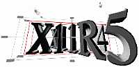

My first Pipeline cover artwork was done for the cover article of the March/April 1993 issu. The article was titled, "Adding Audio to Existing Graphics Application." I used homebrew hacked IRIS GL programs to model the talking heads. The grid background was actually a snapshot from Vertigo's animation software. Now that's a cheap and fast way to get a grid floor eh?
The following was done for the cover article of the May/June 1993 issue of Pipeline. The article was titled, "Adding Attitude to Your Application with Audio." For full detail on the making of this piece, see "The Making Of IndigoGirl".
The following was done for the cover article of the September/October 1993 issue of Pipeline. The article was titled, "X11 Release 5 under IRIX 5.x." I used Inventor SceneViewer to compose the shots. The text was actually done in Textomatic and imported later. Those funny looking box handles are the familiar manipulator handles in Inventor.
In this piece, I wanted to show X11R5 superceding X11R4 in an interesting way. What I ended up with is a low camera angle looking kinda up at these wall-high text spelling out the words X11R4 and X11R5. This reminded me of walking through a life-size labyrinth where everything looked huge 'cuz you're trapped in it. Hmmm.. maybe this piece has a hidden message no?
 The following was done for the cover article of the November/December 1993 issue of Pipeline. The article was titled, "Introducing IRIX 5.1." No such luck in having access to a raytracer, the challenge of this piece was to see if I could light a scene using simple real-time IRIS GL spotlighting on my 3D model. Was it possible to get simulated shadows and shading? I think the result speaks for itself... kinda amazing what simple GL lighting can achieve eh?
Here's a nifty looking color version of this scene.
The following was done for the cover article of the January/February1994 issue of Pipeline. The article was titled, "Video Options on SGI." It was about this time period when IRIS Showcase came out with the 3D gizmo. Finally, there was an interactive way to apply texture mapping onto a 3D model. I thought this was the perfect opportunity to abuse texture-mapping and the result reflects this :-)
For a peek at the making of this scene, here is a wireframe rendering of this scene, done in Inventor SceneViewer.
The great thing about 3D is that you can view your scene from any viewpoint and at any focal length. Here's an alternate view using the "sAmbO effect" perspective.
Also worthy of note is that this scene was later recycled for another project. However, the Indy model was magically replaced by an Indigo2 thanks to IRIS Showcase.
The following was done for the cover article of the January/February 1995 issue of Pipeline. The article was titled, "
For a peek at the making of this scene, here's a wireframe rendering of this scene, done in Inventor SceneViewer.
The very cool 3D Inventor logo was done by Rikk Carey and can be seen in both wireframe and gouraud shaded renderings.

CSD Pipeline Magazine Artworks
"Talking Heads"
March/April 1993
"Indigo d'Attitude"
May/June 1993
"X11R5"
September/October 1993
"The IRIX Tower"
November/December 1993
"Sex, Lies, Video Options..."
January/February 1994
"The Sand Worm"
January/February 1995


{kind=link}
{kind=link}
{kind=link}
{kind=link}
{kind=link}
{kind=link}
{kind=link}
{kind=link}
{kind=link}
{kind=link}
{kind=link}
{kind=link}
{kind=link}
{kind=link}
{kind=link}
{kind=link}